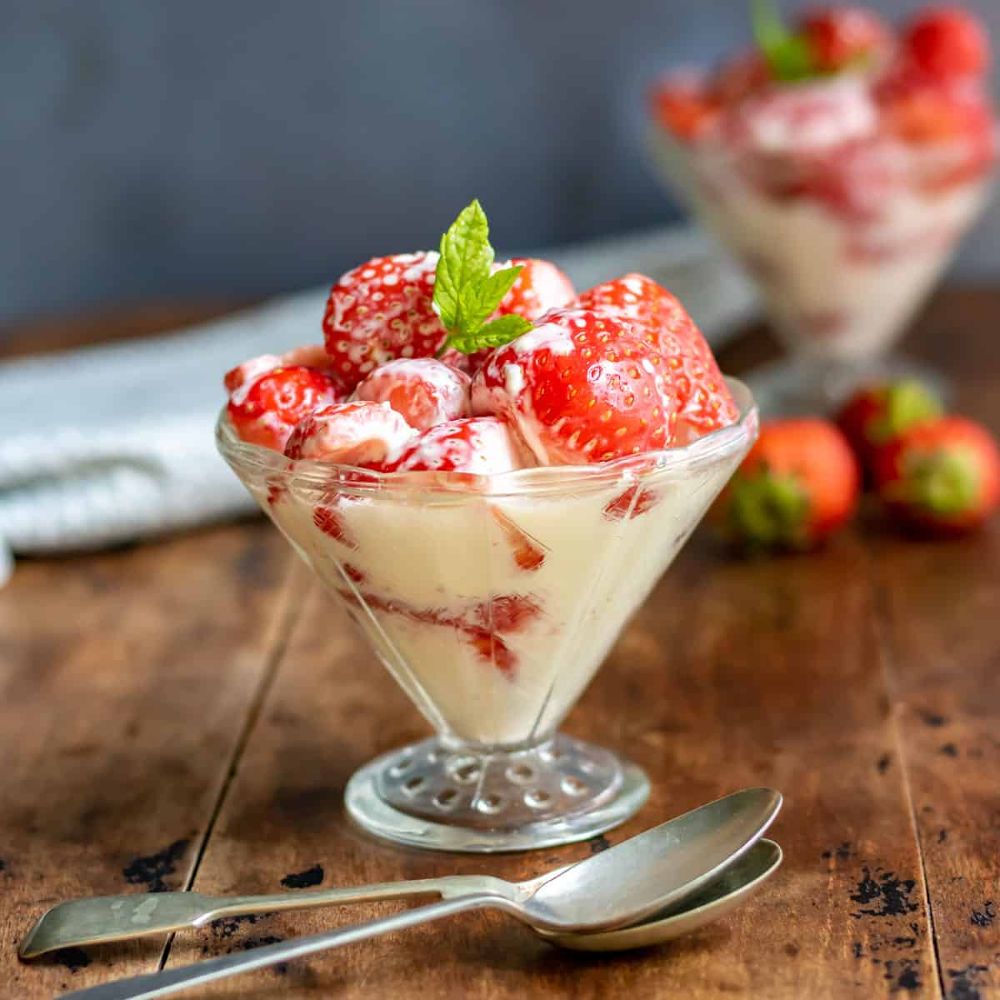

Strawberry & Cream

Ingredients
- 1 cup of fresh strawberries, washed and hulled
- 1 cup of heavy cream
- 2 tablespoons of powdered sugar (adjust to taste)
- 1 teaspoon of vanilla extract
- Fresh mint leaves for garnish (optional)
Steps
- Slice the fresh strawberries into thin slices and set aside a few
slices for garnish.
- In a mixing bowl, combine the heavy cream, powdered sugar, and
vanilla extract.
- Using an electric mixer or whisk, whip the cream mixture until it
reaches stiff peaks. This will take a few minutes.
- Take half of the sliced strawberries and gently fold them into the
whipped cream, reserving the remaining half for serving.
- Once the strawberries are incorporated into the cream, you can
either serve the mixture immediately or refrigerate it for a while
to chill and set.
- To serve, divide the strawberry and cream mixture into serving bowls
or glasses.
- Top each serving with the reserved sliced strawberries.
- If desired, garnish with fresh mint leaves for an extra touch of
freshness and color.
- Your delicious strawberry and cream dessert is now ready to be enjoyed!
Note: You can customize this recipe by adding other fruits or toppings of
your choice. Additionally, you can experiment with the sweetness level by
adjusting the amount of powdered sugar according to your preference.